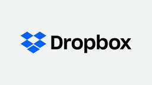
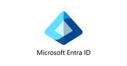
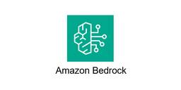
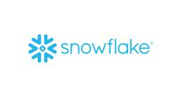
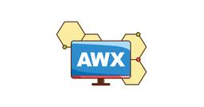

TechHarmony
https://blog.usize-tech.com
エンジニアブログ by SCSK
フィード

【緊急！】情報漏洩・ランサムウェア被害が急増 “もしも”に備える情報管理基盤とは？ Dropboxで実現するセキュリティ対策
TechHarmony
近年、日本国内では情報漏洩やランサムウェア被害が相次いで報道されています。 ニュースで被害企業の名前を目にすると、 「大変なことになったな」「自社は大丈夫だろうか」 と感じる方も多いのではないでしょうか。 しかし、サイ […]
1日前

Zabbix 8.0の新機能！ ClickHouseをインストールしてヒストリデータを保存してみた
TechHarmony
こんにちは。SCSKの上田です。 この度、Zabbix8.0のRC版がリリースされました！ リリースノートZabbixリリースの新機能と改善点をご覧ください。www.zabbix.com 弊社でも、来るべきZabbix […]
4日前

USiZE出展レポート@日経クロステックNEXT東京2026
TechHarmony
こんにちは。SCSK分目です。 2026年9月29日・30日東京国際フォーラムで開催された「日経クロステックNEXT東京2026」に、SCSKの国産プライベートクラウド「USiZE(ユーサイズ)」としてブース出展してきま […]
4日前

Cisco Secure Access の AI Access機能を試してみた② 〜DLP AI Guardrails編〜
TechHarmony
こんにちは、SCSKセキュリティのふくしまです。 前回の記事では、Cisco Secure AccessのAI Access機能の一つである「シャドーAIの可視化・制御」を取り上げました。 組織内で利用されている生成AI […]
4日前

Entra ID でパスキーを有効化する ～ Authenticator に絞った設定と登録手順 ～
TechHarmony
こんにちは。SCSKの福田です。 前回の記事「パスキー入門 ～ 仕組みから種類まで解説 ～」では、パスキーとは何か、なぜ安全と言われるのかを仕組みの面から解説しました。 今回はその続編として、Entra ID（ Micr […]
4日前

ランサムウェアの横展開を阻止せよ、ガートナーが新たに提唱する「自律型マイクロセグメンテーション」実践ガイド
TechHarmony
2026年9月16日 ガートナーが公開した『Emerging Tech Impact Radar: Global Attack Surface Grid（新興技術インパクトレーダー：グローバル・アタックサーフェス・グリッ […]
5日前

Amazon Bedrock Managed Knowledge Baseの最大ファイルサイズにご用心！
TechHarmony
こんにちは、ひるたんぬです。 最近は雨が続いていますね。。 そんな中でも空を眺めていると虹を見つける機会も多くあるかと思います。🌈 しかし…「虹」という漢字は、なぜ「虫」+「工」なのでしょうか？ 虫要素一つもないような… […]
5日前

Google Antigravity CLIを使ってto do管理アプリ作ってみた
TechHarmony
こんにちは！SCSKの森戸です。 近年、AIが自らタスクを分解し、コード記述からブラウザでの動作検証までを全自動で完遂する「自律型AIエージェント」の開発手法が注目されています。その1つとして登場したのが、Googleの […]
6日前

【Zabbix × ゲーミフィケーション】日々の障害対応にユーモアを！監視連動型ゲームを作ってみた
TechHarmony
こんにちは、SCSKの坂木です。 Zabbixのダッシュボードを眺め、アラートを受信しては対応する。 インフラ運用において障害対応は非常に重要ですが、定型的な作業の繰り返しは面白みに欠け、どうしてもモチベーションが下がり […]
6日前

【2026年10月版】Snowflake料金ガイド｜Standard・Enterprise・Business Criticalの違いとCortex/AIの料金・選び方
TechHarmony
こんにちは。関根です。 今回は、Snowflakeの料金体系をまとめてみました。 Snowflakeは使った分だけ支払う従量課金ですが、エディション・クラウド・リージョンによって単価が変わり、AI機能はさらに別の料金体系 […]
6日前

Ansibleを使用してNW機器設定を自動化する（FortiGate-ファイアウォールポリシー編①）
TechHarmony
はじめに 当記事は、日常の運用業務（NW機器設定）の自動化により、運用コストの削減 および 運用品質の向上 を目標に 「Ansible」を使用し、様々なNW機器設定を自動化してみようと 試みた記事です。 Ansibleは […]
6日前
Amazon RDS Extended Support(延長サポート)まとめ
TechHarmony
こんにちは。SCSKのすぐろです。 AWSを利用していて、Amazon RDSの利用料に見覚えのない「RDS Extended Support」という項目が計上されていたことありませんか？ 「延長サポートって何？」「なぜ […]
6日前
Google Antigravity 2.0を使っておみくじWebアプリ作ってみた
TechHarmony
こんにちは！SCSKの森戸です。 近年、AIが自らタスクを分解し、コード記述からブラウザでの動作検証までを全自動で完遂する「自律型AIエージェント」の開発手法が注目されています。その1つとして登場したのが、Googleの […]
6日前
Snowflakeで顧客データをどう分けるか – WHERE句からSecure View、Row Access Policy、Data Sharingまで検証
TechHarmony
こんにちは、関根です。 Snowflakeで複数の顧客のデータを預かるとき、「顧客ごとにテーブルを分けるべきか、1つのテーブルにまとめるべきか」という話になりがちです。ただ、Snowflakeで取れる選択肢はこの二択に収 […]
6日前

CISA「Quality Era（品質の時代）フレームワーク」から読み解く脆弱性管理（CVE）の最新動向と企業における実装ガイド
TechHarmony
2026年9月23日 アメリカのサイバーセキュリティ・インフラセキュリティ庁（CISA：Cybersecurity and Infrastructure Security Agency）が、「CISA Whitepape […]
9日前
Cato Circle（ユーザーコミュニティイベント）を開催しました
TechHarmony
2026年9月、Catoクラウドユーザーの交流イベント、Cato Circleを開催いたしました。第二回となる今回はプログラムを一新し、前回よりも更にネットワーキングをメインとしたイベントとなりましたが、大盛況のうちに終 […]
11日前
【日常運用・障害試験で役立つ！監視・通知・トラブルシューティング術 #2】「画面が開かない・重い」を打破！GUIトラブル脱出への道と次世代WMC運用の勘所
TechHarmony
LifeKeeperの『困った』を『できた！』に変える！サポート事例から学ぶトラブルシューティング＆再発防止策 こんにちは、SCSKの前田です。 いつも TechHarmony をご覧いただきありがとうございます。 連載 […]
11日前
【新入社員がGoogle Cloudを触ってみた】Antigravity 2.0を使って外部連携エージェントを作ってみた(後編)
TechHarmony
こんにちは！SCSKの松浦です。 前編では、Googleが提供する自律型AIエージェント開発環境「Antigravity 2.0」の概要や特徴、Agent DesignerやGoogle ADK（Agent Develo […]
11日前
可用性は高めたい。でもHAクラスター投資は見合わない Single Server Protectionという現実解
TechHarmony
こんにちは。ＳＣＳＫ 池田です。 近年、多くの企業でシステム基盤のクラウド化や仮想化が進んでいます。 VMware環境ではvSphere HA、クラウド環境ではAWSやAzureが提供する可用性機能などを活用し、サーバー […]
11日前
Snowflake WorldTour Tokyo2026イベント参加レポート
TechHarmony
こんにちは！ 最近の推し紅茶はマスカットティー。どうもいとさんです。 先日、データとAIの一大祭典であるSnowflake World Tour Tokyo2026（SWTT）に参加してきました！今回はその現地の様子や、 […]
11日前
Secure Bootとは？――コンピューターの起動と「信頼の連鎖」
TechHarmony
本記事は、世間で騒がれた「Secure Boot」について調べた内容を、筆者が高校時代に授業で習った事や、就職してからの経験した事を踏まえて出来るだけ分かりやすく書いた（つもりの）文章です。 まずは「Secure Boo […]
12日前
【Google Cloud】A2UIを今更ながら触ってみた – エージェントがUIを返す時代
TechHarmony
こんにちは。SCSKの島村です。 皆さんは「A2UI（Agent-to-User Interface）」をご存じでしょうか？？ A2UIとは2025年12月にGoogleが公開した、AIエージェントがリッチなUIを安全に […]
12日前
Snowflake World Tour Tokyo 2026 参加レポート ～新人エンジニアが感じたSnowflakeの魅力～
TechHarmony
皆さんこんにちは！SCSKの石川です。 Snowflake World Tour Tokyo 2026（通称：SWTT）が9月10日(木)-11日(金)の2日間にわたり開催されました！！ 本記事では私が参加した2日目のレ […]
12日前
【ServiceNow】更新セットに記録されないテーブル
TechHarmony
こんにちは。SCSKの北川です。 先日、顧客ポータルの実装案件で、本番環境への移送後に想定どおり動作しない事象が発生しました。原因を調査したところ、更新セットに記録されないテーブルのデータが移送対象から漏れていたことが分 […]
12日前
デジタル庁GSS不正アクセス事案に学ぶ、VPNの脆弱性管理の限界と取るべきゼロトラストに向けた具体的な施策について
TechHarmony
デジタル庁の運用するガバメントソリューションサービス（GSS）が外部からの不正アクセスにより、24.6万件の職員を含む個人情報が外部に漏えいした可能性があることが公表されました。原因は今更ですが、VPN機器の脆弱性を利用 […]
12日前
【新入社員がGoogle Cloudを触ってみた】Antigravity 2.0を使って外部連携エージェントを作ってみた(前編)
TechHarmony
こんにちは！SCSKの松浦です。 以前、Gemini Enterpriseのノーコード機能である 「Agent Designer」 を利用して、 「新人向けIT・ビジネス用語学習エージェント」 を作成しました。 その際の […]
12日前
ランサムウェア対策は「防ぐ」だけでは不十分？Rubrikが実現する脅威ハンティングとは
TechHarmony
こんにちは！Rubrikのマーケティング担当です。 「EDRを導入しているから大丈夫」 「バックアップを取っているので安心」 そう考えていても、ランサムウェアの侵入を完全に防ぐことは困難です。 実際に被害が発生すると、企 […]
12日前
日経クロステックNEXT東京2026 SCSKブース 限定ノベルティをご紹介！
TechHarmony
こんにちは。SCSK分目です。 このたび日経クロステックNEXT東京2026への出展にあわせて、ブースにお立ち寄りいただいた方へお渡しするオリジナルノベルティをご用意しました。そのノベルティを一足先にご紹介します。 ぜひ […]
16日前
【ServiceNow】Referenceフィールドの値をスクリプトで取得する方法
TechHarmony
今回はServiceNowのReference（参照）フィールドについて、スクリプトから値を取得する際の基本的な方法を紹介します。 ReferenceフィールドはServiceNowではよく使用するフィールドですが、画面 […]
16日前
【Google Cloud 】DiffusionGemma-as-Jev（System Oneモデル）を Google Cloud で試してみる。
TechHarmony
こんにちは。SCSKの島村です。 本記事ではGoogle DeepMindの拡散モデルベースのLLM「DiffusionGemma-as-Jev（djev）」について検証・整理したいと思います。 DiffusionGem […]
17日前
SnowflakeのデータをWebに届ける・SQL APIとWordPressで始めるデータ可視化
TechHarmony
Snowflakeにたまっているデータを、BIツール(QuickSight、Looker など)を使わずに、手元のWordPressサイトでさっと表やグラフにして見たい！という検証をしました。本記事では、WordPres […]
17日前
【Catoクラウド】FortiGateと比較してみた！～ネットワーク編～
TechHarmony
こんにちは！Catoクラウド担当の山形です。 前回投稿した【Catoクラウド】FortiGateと比較してみた！～ハードウェア編～に続き、今回はCatoクラウドとFortiGateの比較シリーズ第2弾として「ネットワーク […]
17日前
EDRの限界を突破する「封じ込め」戦略。ラテラルムーブメントを完全に阻止するネットワーク防御について
TechHarmony
EDRの代表製品をAIで聞くと、CrowdStrike Falcon、Cybereason EDR、Microsoft Defender for Endpoint、Trend Vision One Endpoint Se […]
17日前
【2026年版】マルウェア対策・EDR・ランサムウェア対策の再点検──“公開マルウェア検体だけの評価”では見抜けない現実
TechHarmony
こんにちは。SCSKの石井です。 このところ、生成AIの話題を聞かない日は本当にないですね。 仕事でも私生活でも「とりあえずAIに聞いてみるか」が当たり前になってきて、便利さに驚く半面、ちょっとした雑談まで妙にそれっぽく […]
17日前
その判定、LLMでやる必要ある？ TypeSafe AIの「話さないAI」Jevで問い合わせの一次判定をやってみた。
TechHarmony
こんにちは、関根です。 生成AIで業務を自動化しようとすると、たいていの場面でまずLLMを呼びます。メールの仕分け、優先度の判定、担当への振り分け。どれも「LLMに聞けばできる」ので、そのまま組んでしまいがちです。 ただ […]
20日前
【Cortex Cloud】OCIを接続してみた
TechHarmony
クラウド環境の設定ミスやセキュリティリスクを可視化するために、Palo Alto NetworksのCortex CloudへOracle Cloud Infrastructure（OCI）をオンボードしてみました。 C […]
22日前
Snowflake World Tour Tokyo 2026 出展レポート
TechHarmony
こんにちは。SCSKの関です。 2026年9月に開催された「Snowflake World Tour Tokyo 2026」は、Snowflakeが主催するデータ・AI領域の大型イベントです。今年は「Making AI […]
22日前
LifeKeeper for Windowsの構築に役立つLKCLIコマンドのご紹介
TechHarmony
こんにちは、SCSKの伊藤です。 前回はWindows版のLKCLIを使ってみましたが、Linux版とコマンドの構成が違うことに気付いた方もいるかと思います。 本記事では、過去のLinux版LKCLI記事と同様に、Lif […]
23日前
ランサムウェア事案の「最終段階」を回避せよ。IPA教訓集に学ぶ、経営と現場を繋ぐ真のサイバーレジリエンス
TechHarmony
2026年9月8日 独立行政法人情報処理推進機構（IPA）が「ランサムウェア被害から学ぶ教訓集 ～ 経営者のためのランサムウェア対策ハンドブック ～」を公開しました。このハンドブックは日本国内で実際にランサムウェア被害に […]
23日前
そして・・世界初アワード：テクノロジーイノベーション賞は…！ Deep Instinct（ディープ・インスティンクト）！
TechHarmony
みなさん、こんにちは！SCSKの石井です。 酷暑が和らぎ、秋の風が心地よく感じる9月。ですが、情シスの皆さまの「脆弱性対応の熱」は一向に下がる気配がありませんよね（笑）。 実は今、サイバー空間では「CVSS（脆弱性評価値 […]
24日前
【Cortex Cloud】PlaybookのAIを使用してみた
TechHarmony
前回はAutomation機能の1つであるPlaybook機能を使用して実際に使用できるPlaybookの作成をしました。 今回はPlaybookの中でAIが使用できる「AI Prompt」を使用して簡単なPlayboo […]
25日前
【ホラーを超える不条外】ランサムウェアに偽装したサイバー兵器『ワイパー』の恐怖と、2026年最新ガバナンスが求める「実行前予測予防」の極致
TechHarmony
みなさん、こんにちは！SCSKの石井です。 少しずつ夜風が涼しくなり、秋の夜長が恋しくなる9月中旬。皆さまはいかがお過ごしでしょうか。 秋の夜長といえば「ミステリー小説」や「ホラー映画」。👻 深夜にゾクゾクするようなホラ […]
25日前
【技術革新アワード受賞】フロンティアAIの超高速ゼロデイを完封する『Deep Instinct』と、金融庁が促す『リスクベース脆弱性管理（RBVM）』の統合アプローチ最強説
TechHarmony
みなさん、こんにちは！SCSKの石井です。 酷暑が少しずつ和らぎ、朝晩に秋の風が心地よく通り抜ける9月。ですが、情シスの皆さまの「脆弱性対応の熱」は一向に下がる気配がありませんよね（笑）。 実は今、サイバー空間では「CV […]
25日前
フロンティアAIレディ（Mythosレディ）に向けた「3層防御モデル」の実装と運用方法について
TechHarmony
国際的に活動している非営利法人 CSA（クラウドセキュリティアライアンス）の日本支部 CSAジャパンが運営するブログ「Mythosレディとは何か」から考察したMythos（ミュトス）を含むフロンティアAIによるサイバー攻 […]
1ヶ月前
【ServiceNow】関連リストの仕組みをざっくり理解する
TechHarmony
ServiceNowのフォームを開くと、画面下部に「インシデント」「承認」「タスク」など、現在開いているレコードに関連するレコードの一覧が表示されることがあります。 これが「関連リスト（Related List）」です。 […]
1ヶ月前
【ServiceNow】Australiaバージョンアップ後にScript Includeでエラーが発生した事象について
TechHarmony
ServiceNowをYokohamaバージョンからAustraliaバージョンへアップグレードした後、これまで問題なく動作していたScript Includeが正常に動作しなくなる事象が発生しました。 調査を進めたとこ […]
1ヶ月前
【新人が Google Cloud 触ってみた】Antigravity と Agents-cli で Agent を Agent Runtime にデプロイしてみた。
TechHarmony
こんにちは！SCSK新人の佐子です。 先日、Snowflakeのイベントに参加する機会がありました。 しかし、その企業ごとの強みを聞く以前に、「そもそもSnowflakeって何ですか？」「AI Readyってどういう状態 […]
1ヶ月前
脆弱性対応は「日（N-day）」から「時間（N-hour）」へ、IPAのAIセキュリティ短信から読み解くAIエージェントを活用した2026年セキュリティ地固めについて
TechHarmony
2026年9月7日 独立行政法人情報処理推進機構（IPA）が AIセキュリティ短信 の最新の「AIセキュリティ短信 2026年8月号」を公開しました。 本レポートは、2026年8月10日までに報じられたAIとサイバーセキ […]
1ヶ月前
Dropboxで実現するSCS評価制度対応（実践編） ～評価基準7分類から考える、アクセス権管理・共有統制・証跡管理の進め方～
TechHarmony
前回の記事では、サプライチェーン強化に向けたセキュリティ対策評価制度（SCS評価制度）の概要や、なぜ今対応が必要なのかについて解説しました。 SCS評価制度は単なるセキュリティチェックリストではありません。重要なのは、「 […]
1ヶ月前
Dropbox Protectで実現する共有リンクの可視化とリスク対策
TechHarmony
Dropboxの共有リンクは、ファイルやフォルダをすばやく共有できる便利な機能です。メールにファイルを添付する代わりにリンクを案内できるため、日々の情報共有を円滑にし、社内外の関係者との共同作業にも活用できます。 一方、 […]
1ヶ月前